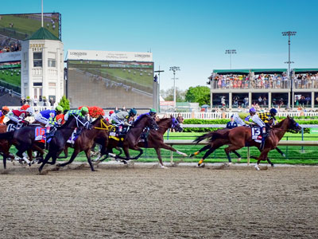
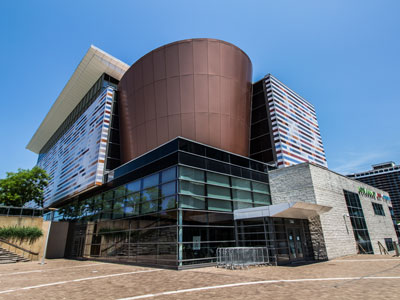
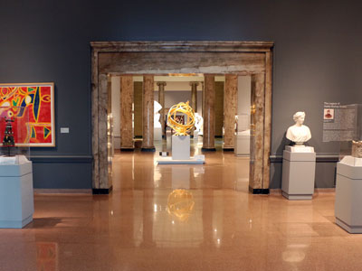
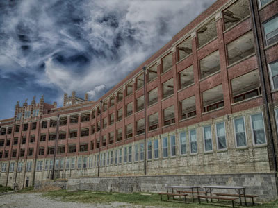
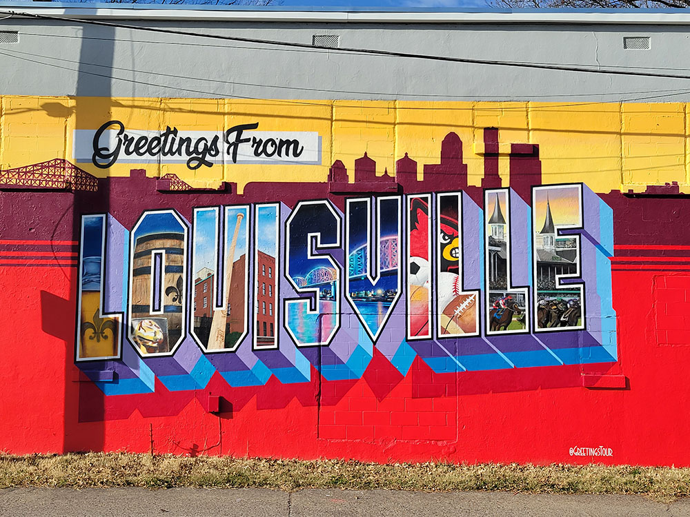
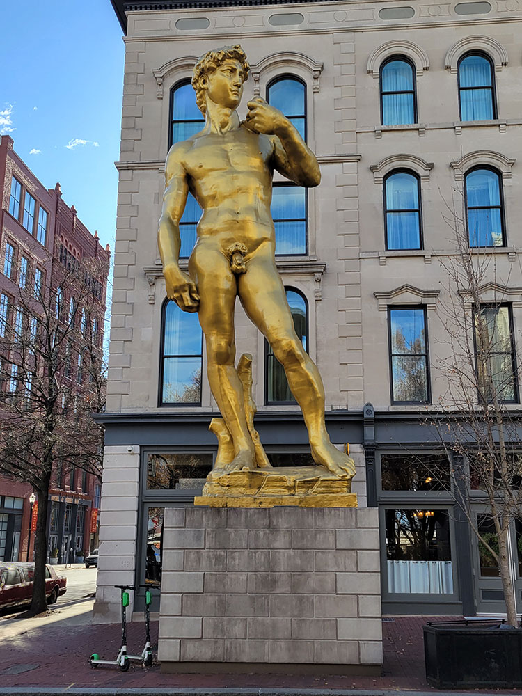
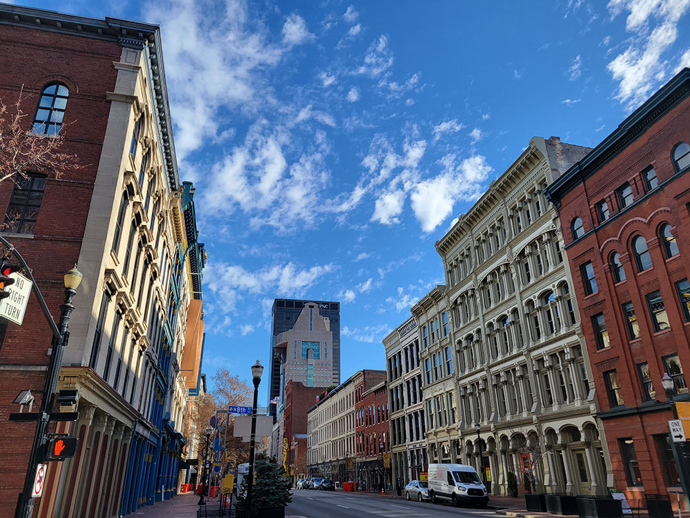
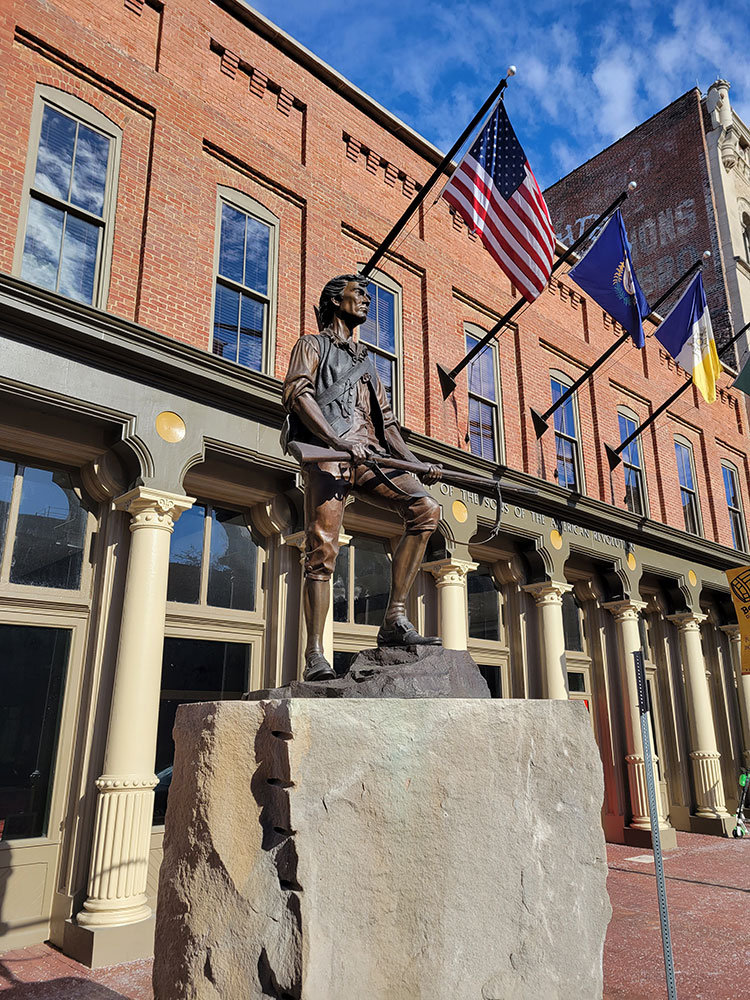
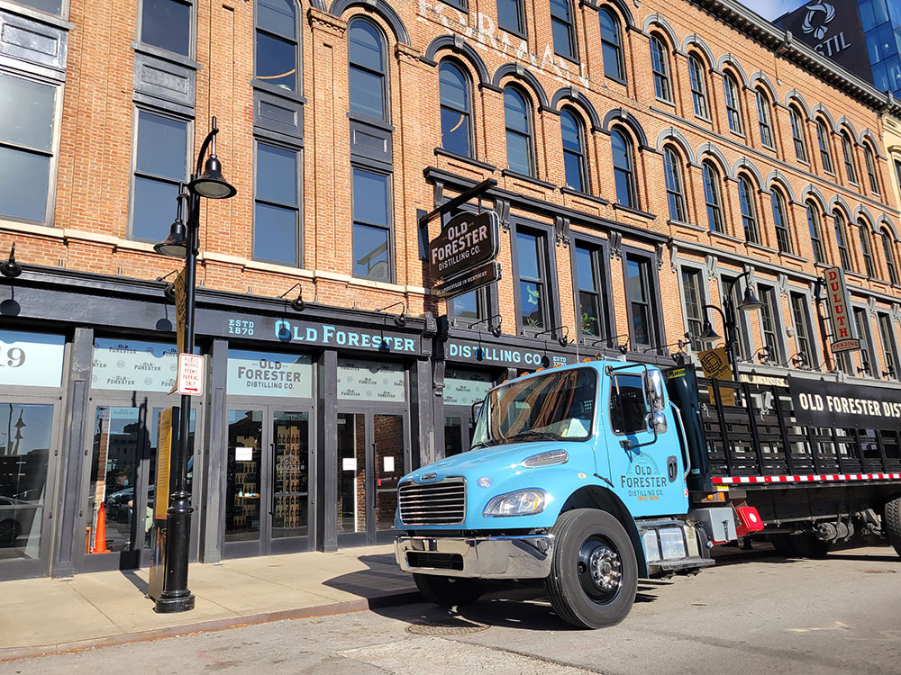

{kind=link}
Louisville Travel Guide
Largest city in Kentucky founded in 1778, making it one of the oldest cities west of the Appalachians
Places to See in Louisville
Belle of Louisville
Steamboat moored at its downtown wharf next to the Riverfront Plaza/Belvedere during that claims itself the "most widely traveled river steamboat in American history"
Big Four Bridge
Six-span former railroad truss bridge that crosses the Ohio River, connecting Louisville and Jeffersonville, Indiana and converted to bicycle and pedestrian use in 2014
Cave Hill Cemetery
Victorian era National Cemetery and arboretum is the largest cemetery by area and number of burials in Louisville including Muhammad Ali and Colonel Harland Sanders
Cherokee Park
409-acre municipal park featuring a 2.4 mile scenic loop through the park's pastoral setting featuring rolling hills, open meadows and woodlands
Churchill Downs
Horse racing complex located in south Louisville, famed for hosting the annual Kentucky Derby
Farmington Historic Home
A restored Federal-style manor house at the center of a former hemp plantation, notable for its Jeffersonian architectural design and as the site of a young Abraham Lincoln's three-week visit in 1841.
Fourth Street Live!
350,000-square-foot entertainment and retail complex located in Downtown Louisville

Capablancaa, CC BY-SA 4.0, via Wikimedia Commons; Image Size Adjusted
{kind=link}
Frazier History Museum
History museum and an affiliate of the Smithsonian Institution, the Frazier documents and reinterprets stories from history using artifacts, gallery talks, and live interpretations

Bill Brine, CC BY 2.0, via Wikimedia Commons; Image Size Adjusted
.jpg){kind=link}
Kentucky Derby
Horse race held annually in Louisville, on the first Saturday in May, capping the two-week-long Kentucky Derby Festival
Louisville Slugger Museum & Factory
Museum showcases the story of Louisville Slugger baseball bats in baseball and in American history
Louisville Union Station
Historic railroad station reflecting Richardsonian Romanesque style of architecture
Louisville Waterfront Park
85-acre (340,000 m2) municipal park adjacent to the downtown area of Louisville, Kentucky and the Ohio River

Proof377, CC BY-SA 4.0, via Wikimedia Commons; Image Size Adjusted
{kind=link}
Muhammad Ali Center
Non-profit museum and cultural center dedicated to boxer Muhammad Ali, a native of Louisville
Old Louisville
Historic district and neighborhood in central Louisville, Kentucky is the third largest such district in the United States, and the largest preservation district featuring almost entirely Victorian architecture

Sailko, CC BY 3.0, via Wikimedia Commons; Image Size Adjusted
{kind=link}
Speed Art Museum
Oldest, largest, and foremost museum of art in Kentucky housing ancient, classical, and modern art from around the world with the focus on Western art, from antiquity to the present day
Aroun Kesavaraj, CC BY-SA 4.0, via Wikimedia Commons; Image Size Adjusted
{kind=link}
Thunder Over Louisville
Annual kickoff event of the Kentucky Derby Festival, is an airshow and fireworks display generally held each April, about two weeks before the first Saturday in May, or Derby Day

Royasfoto73, CC BY-SA 4.0, via Wikimedia Commons; Image Size Adjusted
{kind=link}
Waverly Hills Sanatorium
Former sanatorium opened in 1910 as a two-story hospital to accommodate 40 to 50 tuberculosis patients now open for tours
Overview
Louisville is the largest city in Kentucky, founded in 1778 by George Rogers Clark on the Ohio River at the Falls of the Ohio, making it one of the oldest cities west of the Appalachians. The city is best known today as home of the Kentucky Derby, boxer Muhammad Ali, and Louisville Slugger baseball bats, and its blend of Southern and Midwestern culture has earned it a reputation as one of the northernmost Southern cities in the country.
The first Kentucky Derby was run in 1875 at what's now Churchill Downs, and the race remains the city's marquee event, capping the two-week Kentucky Derby Festival each spring with events like the Pegasus Parade and Thunder Over Louisville, the largest fireworks display in North America.
Downtown's "Museum Row" includes the Frazier History Museum, the Kentucky Science Center, the Muhammad Ali Center, and the Speed Art Museum, the state's oldest and largest art museum, while the nearby East Market District (NuLu) concentrates the city's art galleries. The Old Louisville neighborhood is the country's largest Victorian-era historic preservation district, and downtown's West Main Street holds one of the largest collections of cast-iron building facades outside of New York's SoHo.
Louisville's park system, much of it designed by Frederick Law Olmsted, includes Waterfront Park along the Ohio River, connected to Indiana by the pedestrian Big Four Bridge, and Cherokee Park, one of the most-visited parks in the country. Just outside downtown, Jefferson Memorial Forest is the largest municipal urban forest in the United States.
This article uses material from the Wikipedia article "Louisville, Kentucky" which is released under the Creative Commons Attribution-Share-Alike License 3.0




